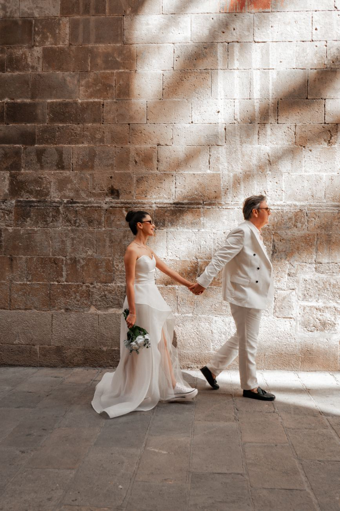

One of the most common questions couples ask when booking a Barcelona wedding photographer is: “Do I need a second shooter?” It’s a fair question, and the
What Does a Second Shooter Actually Do?
A second shooter isn’t just “another photographer.” They’re a strategic partner who expands what’s possible on your wedding day.
The Solo Photographer’s Limitations
When I shoot alone, I’m constantly making choices: - Do I photograph the bride getting ready or the groom getting ready? - Do I capture the ceremony from the front or the back? - Do I follow the couple for portraits or stay with guests during cocktail hour? - Do I shoot the first dance from the floor or from the balcony? Every choice means missing something. A solo photographer can be in only one place at one time.
Guest Count Over 80
With 80+ guests, a solo photographer simply can’t capture everything. While I’m photographing the couple, the second shooter is: - Capturing candid guest interactions - Documenting details you never see (table settings, flowers, venue ambiance) - Photographing family members who might be missed - Covering cocktail hour while you’re in portraits My rule: For weddings over 100 guests, I strongly recommend, and sometimes require, a second shooter. The logistics of covering that many people, that much space, and that many simultaneous moments demand two perspectives.
Separate Getting-Ready Locations
If the bride and groom are getting ready at different hotels or venues, a solo photographer must choose. A second shooter ensures both stories are told. Barcelona example: - Bride getting ready at Hotel Arts (Barceloneta) - Groom getting ready at Casa Fuster (Gràcia) - These are 20 minutes apart by car, impossible for one photographer to cover both

Large Wedding Parties
With 6+ bridesmaids and 6+ groomsmen, formal photos take significantly longer. A second shooter can: - Begin photographing one party while I finish with the other - Capture candid moments during the formal session - Document the “in-between” moments that make wedding parties special
Complex Timelines
If your Barcelona wedding includes: - Multiple portrait locations (Park Güell + Gothic Quarter + beach) - A long cocktail hour with many guests - Extensive family formals - Cultural ceremonies with multiple components A second shooter ensures nothing is missed while the timeline stays on track.
Cultural or Religious Ceremonies with Restrictions
Some ceremonies (Catholic masses, Hindu weddings, Jewish ceremonies) have restrictions on photographer movement. A second shooter positioned at a different angle ensures comprehensive coverage despite limitations.
Guest Count 50 to 80
A solo photographer can cover this range, but a second shooter adds: - More candid guest coverage - Better cocktail hour documentation - Additional angles during key moments - Backup in case of equipment failure
Medium Wedding Parties (4 to 6 each side)
Formal photos are manageable solo, but a second shooter speeds up the process and captures more candid moments.
Single Venue with Good Flow
If your ceremony, cocktail hour, and reception are all at one venue with easy transitions, a solo photographer can handle it. A second shooter adds depth but isn’t necessary.
Intimate Weddings and Elopements (Under 50 Guests)
For micro-weddings, elopements, and intimate celebrations, a solo photographer is often ideal. The smaller scale means: - Fewer simultaneous moments to capture - More intimate, connected coverage - The photographer can be present for everything without missing key moments - The couple often prefers a single, familiar presence My approach for intimate weddings: I shoot solo for elopements and micro-weddings. The intimacy of these celebrations benefits from a single, trusted photographer rather than a team.
Single Location, Simple Timeline
If your wedding is at one venue with a straightforward timeline (ceremony → cocktail hour → reception, all in one place), a solo photographer can cover everything comprehensively.
Budget Considerations
A second shooter typically adds €400 to €800 to your package. If your budget is tight and your wedding is small and simple, a skilled solo photographer will deliver beautiful results.
What a Second Shooter Costs (and What You Get)
Typical Second Shooter Pricing in Barcelona
When you add a second shooter to your Barcelona wedding package, you get:
Pre-wedding consultation: I brief the second shooter on your timeline, priorities, and style Coordinated coverage: We work as a team, not two separate photographers Complementary styles: My second shooters match my documentary-editorial approach Additional images: Typically 200 to 400 extra photos in your final gallery Backup equipment: Two complete kits = double the reliability Different perspectives: Wide shots, detail shots, reactions, and candids that a solo photographer can’t capture
The Quality Question: Are All Second Shooters Equal?
No. This is critical to understand. Some photographers hire second shooters who are: - Photography students or assistants (learning, not experienced) - Part-time photographers (skilled but not wedding specialists) - Other professional photographers (experienced but with different styles) My approach: I work exclusively with a small team of trusted second shooters, professional wedding photographers in their own right who share my style, my standards, and my philosophy. They’re not assistants; they’re collaborators. What to ask your photographer about their second shooter: 1. “How many weddings has your second shooter photographed?” 2. “Can I see a full gallery they’ve shot as a second shooter?” 3. “Do they shoot in a similar style to you?” 4.
“What happens if your second shooter gets sick or can’t make it?” 5. “Will the second shooter’s photos be edited to match yours?”
Scenario 1: Elopement at Park Güell (2 Guests)
Wedding details: - 2 guests (just the couple) - Sunrise ceremony at Park Güell - 4 hours of coverage - Single location My recommendation: Solo photographer Why: The intimacy of an elopement benefits from a single, trusted presence. There’s no “other story” to capture, just the couple’s experience. A second shooter would feel intrusive. Gallery outcome: 200 to 300 beautiful, intimate images. Complete story, no gaps.
Scenario 2: City Wedding at a Gothic Quarter Venue (60 Guests)
Wedding details: - 60 guests - Ceremony and reception at one venue - 8 hours of coverage - Cocktail hour portraits in the Gothic Quarter My recommendation: Solo photographer (with option to add second shooter) Why: A skilled solo photographer can cover this comprehensively. The second shooter adds depth (more candids, additional angles) but isn’t essential. Gallery outcome (solo): 400 to 500 images, complete story Gallery outcome (with second): 600 to 700 images, richer candids, more angles
Scenario 3: Destination Wedding at a Masia (120 Guests)
Wedding details: - 120 guests - Multi-location: prep at hotel, ceremony at masia, portraits at vineyard, reception at masia - 10 hours of coverage - Extensive family formals My recommendation: Second shooter essential Why: The scale, complexity, and multiple locations make two photographers necessary. While I photograph the couple at the vineyard, the second shooter covers cocktail hour. While I shoot family formals, the second shooter captures candid guest moments. Gallery outcome: 800 to 1,000 images, comprehensive coverage of every moment
Scenario 4: Indian Wedding in Barcelona (250 Guests, 3 Days)
Wedding details: - 250 guests - 3-day celebration (mehndi, sangeet, wedding ceremony, reception) - Multiple venues - Extensive cultural ceremonies My recommendation: Second shooter essential, possibly third shooter Why: The scale, complexity, and cultural significance demand comprehensive coverage. Multiple shooters ensure no moment is missed across three days of celebration. Gallery outcome: 2,000+ images across three days, complete documentation of every ceremony
How to Decide: A Simple Framework
Ask yourself these questions:
How many guests?
Under 50: Solo is sufficient 50 to 80: Solo works, second shooter adds value Over 80: Second shooter recommended Over 120: Second shooter essential
How complex is the timeline?
Single venue, simple flow: Solo works Multiple locations or complex transitions: Second shooter helpful Cultural ceremonies with multiple components: Second shooter recommended
Are getting-ready locations separate?
Same location or nearby: Solo can manage Different venues, significant distance: Second shooter essential
What’s your budget?
Tight: Invest in the best solo photographer you can afford Flexible: A second shooter adds significant value for medium-to-large weddings Generous: Second shooter + premium coverage = comprehensive documentation
What’s your priority?
Intimacy and connection: Solo photographer Comprehensive coverage: Second shooter Artistic variety: Second shooter (different angles, perspectives, lenses)
The Bottom Line
A second shooter isn’t always necessary, but it’s often valuable. The decision depends on your wedding’s scale, complexity, and your priorities. My honest advice: - For intimate weddings and elopements, invest in an exceptional solo photographer - For medium weddings, a second shooter adds depth but isn’t essential - For large, complex, or multi-day celebrations, a second shooter is one of the best investments you can make Whatever you choose, the quality of the photographer matters more than the quantity. A skilled solo photographer will deliver better results than two mediocre photographers. And two exceptional photographers working together? That’s the gold standard. Let’s talk about your Barcelona wedding.
I’ll help you determine whether a second shooter is right for your celebration, no upselling, just honest advice based on your specific needs.
Will a second shooter make my gallery significantly larger? Yes, typically 200 to 400 additional images. But more importantly, the gallery will be richer in perspectives, angles, and candid moments that a solo photographer can’t capture.
Can I add a second shooter later? Usually, yes, up to 2 to 3 months before the wedding. However, my best second shooters book up quickly, especially during peak season (May to October).
Do second shooters have the same editing style as the main photographer? With my team, yes. I edit all images, both mine and the second shooter’s, to ensure a consistent, cohesive gallery. The style, color, and quality are uniform throughout.
What if the second shooter gets sick? I have a network of backup second shooters. In the unlikely event that your assigned second shooter can’t make it, I have qualified replacements ready. This has never happened, but I’m prepared.
Can I meet the second shooter before the wedding? Absolutely. I encourage couples to meet (virtually or in person) with the second shooter before the wedding. Building rapport ensures comfort and trust on the day.
Do you recommend second shooters for engagement sessions? Rarely. Engagement sessions are intimate and benefit from a single photographer’s focused attention. The exception is if you want extensive coverage at multiple locations in a short time.
Moment | Solo Photographer | With Second Shooter Getting ready | Choose: bride OR groom | Both simultaneously Ceremony | One angle, one perspective | Multiple angles, reactions, wide shots Cocktail hour | Portraits OR guest candids | Portraits AND guest candids Reception | One perspective on speeches/dancing | Reactions, wide shots, details simultaneously Key moments | One angle | Two angles = more storytelling options Package Level | Second Shooter Cost | What’s Included Basic | €400 to €500 | 4 to 6 hours, assistant-level coverage Standard | €500 to €700 | 6 to 8 hours, experienced photographer Premium | €700 to €1,000 | Full day, highly experienced, specialized skills